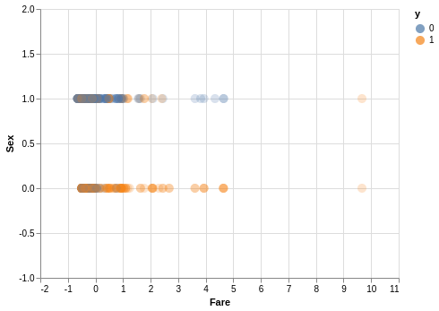
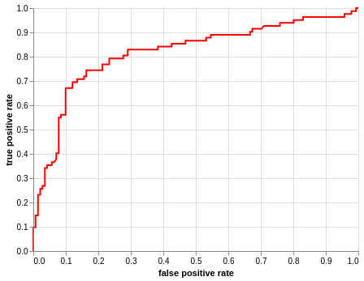
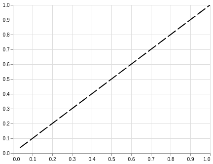
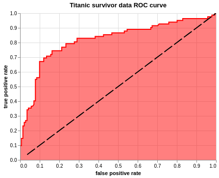

So you can make an ROC curve in pyplot but it looks like this.

But fear not my friends, for Altair is here to fulfill all your aesthetic needs. In this amazing* blog I will introduce the ways of plotting an ROC curve in Altair.
In an ideal world, there will be an ROC curve in the Altair example gallery, but the path to an ROC curve is harder than we wish for it to be.
(Condition may apply)
ROC curve plots Sensitivity(True positive rate) and 1 - Specifity(False positive rate) on it's x and y axis. Before we get that, we need to first create a model. If you wish to skip all of that and get to the ROC curve, you can do that here.
For this example, I am using titanic data from Kaggle
# imports
import pandas as pd
import numpy as np
import matplotlib.pyplot as plt
import seaborn as sns
from sklearn.linear_model import Lasso
from sklearn.linear_model import LassoCV
from sklearn import datasets
from sklearn_pandas import CategoricalImputer
from sklearn_pandas import DataFrameMapper
from sklearn.preprocessing import StandardScaler, LabelEncoder
from sklearn.impute import SimpleImputer
from sklearn.model_selection import train_test_split
from sklearn.neighbors import KNeighborsClassifier
from sklearn.metrics import r2_score, mean_squared_error
from sklearn.linear_model import LogisticRegression
from sklearn.svm import SVC
from sklearn.ensemble import BaggingClassifier, AdaBoostClassifier, RandomForestClassifier
from sklearn.preprocessing import label_binarize, LabelBinarizer
from sklearn.base import TransformerMixin
class SafeLabelBinarizer(TransformerMixin):
def __init__(self):
self.lb = LabelBinarizer()
def fit(self, X):
X = np.array(X)
self.lb.fit(X)
self.classes_ = self.lb.classes_
def transform(self, X):
K = np.append(self.classes_, ['__FAKE__'])
X = label_binarize(X, K, pos_label=1, neg_label=0)
X = np.delete(X, np.s_[-1], axis=1)
return X
def fit_transform(self, X):
self.fit(X)
return self.transform(X)
# in this house we mute our warnings
pd.set_option('mode.chained_assignment', None)
import warnings
warnings.filterwarnings("ignore")
Step 1: Load data
Load data, drop na, impute values(Preferebly after you train test split).
# load data
df = pd.read_csv('data/train.csv')
# drop na
df = df.dropna(subset = ['Embarked'])
# Dataframer to impute missing values, standard scale and label binarize
mapper = DataFrameMapper([
('Survived', None),
('Pclass', SafeLabelBinarizer()),
('Sex', LabelEncoder()),
(['Age'], [SimpleImputer(strategy = 'mean'), StandardScaler()]),
('SibSp', None),
('Parch', None),
(['Fare'], StandardScaler()),
('Embarked', SafeLabelBinarizer())
], df_out=True)
Z_df = mapper.fit_transform(df)
Step 2: Train test split
# train test split
target = 'Survived'
X = Z_df.drop(target, axis = 1)
y = Z_df[target]
Z_train, Z_test, y_train, y_test = train_test_split(X, y, test_size=0.25, random_state=42)
Step 3: Feature Selection
# feature selection using ANOVA
from sklearn.feature_selection import SelectPercentile
select = SelectPercentile(percentile=20)
select.fit(Z_train, y_train)
Z_train_selected = select.transform(Z_train)
# find selected features and put it in a column
selection = select.get_support()
select_df = pd.DataFrame(zip(Z_train.columns.ravel(), selection), columns = ['feature', 'bool'])
select_df[select_df['bool']]
| feature | bool | |
|---|---|---|
| 3 | Sex | True |
| 7 | Fare | True |
# scatter plot to see how our data is looking
import altair as alt
alt.renderers.enable('notebook')
# disable max rows
alt.data_transformers.disable_max_rows()
# put y_train in the same df as X_train
scatter_df = Z_train[['Sex', 'Fare']]
scatter_df['y'] = y_train
alt.Chart(scatter_df).mark_circle(size = 100, fillOpacity = 0.3).encode(
alt.X('Fare', scale = alt.Scale(domain = [-2, 11])),
alt.Y('Sex', scale = alt.Scale(domain = [-1,2])),
color = 'y:N',
).interactive()
<vega.vegalite.VegaLite at 0x7f364d5f0eb8>

Step 4: Model
What models can we try on this? - knn - logreg - svm - random forest - bag
Let's try out all of them!
In the next block of code, I am going to set up a loop to fit these models and put their scores in a df for easier interpretation.
knn = KNeighborsClassifier(10)
logreg = LogisticRegression(solver = 'lbfgs')
svc = SVC(gamma = 'scale')
ada = AdaBoostClassifier()
bag = BaggingClassifier()
models = [knn, logreg, svc, ada, bag]
model_names = ['knn', 'logreg', 'svc', 'ada', 'bag']
model_score_dict = {}
model_no = 0
for model in models:
model.fit(Z_train, y_train)
model_tscore = model.score(Z_train, y_train)
model_pscore = model.score(Z_test, y_test)
model_score_dict.update({ model_names[model_no] : [model_tscore, model_pscore]})
model_no += 1
model_score_df = pd.DataFrame(model_score_dict).T
model_score_df.columns = ['train_score', 'test_score']
model_score_df
| train_score | test_score | |
|---|---|---|
| knn | 0.828829 | 0.789238 |
| logreg | 0.788288 | 0.802691 |
| svc | 0.831832 | 0.820628 |
| ada | 0.833333 | 0.811659 |
| bag | 0.966967 | 0.820628 |
Let's call a confusion matrix to identify our false positive and false negatives.
from sklearn.metrics import confusion_matrix
i = 0
fp = []
fn = []
for model in models:
cm = confusion_matrix(y_train, model.predict(Z_train))
fp.append(cm[0][1])
fn.append(cm[1][0])
model_score_df['False positive'] = fp
model_score_df['False negative'] = fn
model_score_df
| train_score | test_score | False positive | False negative | |
|---|---|---|---|---|
| knn | 0.828829 | 0.789238 | 38 | 76 |
| logreg | 0.788288 | 0.802691 | 54 | 87 |
| svc | 0.831832 | 0.820628 | 39 | 73 |
| ada | 0.833333 | 0.811659 | 53 | 58 |
| bag | 0.966967 | 0.820628 | 7 | 15 |
At this point I will pick one model based of root mean squared errors since I don't want 5 different models. We want to minimize False positives, since it is predicting people to survive titanic falsely.
i = 0
rmse_train = []
rmse_test = []
for model in models:
rmse_train.append(np.sqrt(mean_squared_error(y_train, model.predict(Z_train))))
rmse_test.append(np.sqrt(mean_squared_error(y_test, model.predict(Z_test))))
model_score_df['rmse train'] = rmse_train
model_score_df['rmse test'] = rmse_test
model_score_df
| train_score | test_score | False positive | False negative | rmse train | rmse test | |
|---|---|---|---|---|---|---|
| knn | 0.828829 | 0.789238 | 38 | 76 | 0.413728 | 0.459089 |
| logreg | 0.788288 | 0.802691 | 54 | 87 | 0.460121 | 0.444195 |
| svc | 0.831832 | 0.820628 | 39 | 73 | 0.410083 | 0.423524 |
| ada | 0.833333 | 0.811659 | 53 | 58 | 0.408248 | 0.433982 |
| bag | 0.966967 | 0.820628 | 7 | 15 | 0.181750 | 0.423524 |
Looking at the root mean squared error we can see that bag is massively overfitting. Among the others, since logreg has low number of false positives and not overfitting, I will be working with the logreg model going forward.
Step 6: ROC curve
First, import roc_curve from sklearn.metrics
from sklearn.metrics import roc_curve
If we try using the roc_curve, we get a tuple of three arrays.
roc_curve(y_test, logreg.predict_proba(Z_test)[:,1])
(array([0. , 0. , 0. , 0.0070922 , 0.0070922 ,
0.0141844 , 0.0141844 , 0.0212766 , 0.0212766 , 0.02836879,
0.02836879, 0.03546099, 0.03546099, 0.04255319, 0.04255319,
0.05673759, 0.05673759, 0.06382979, 0.07092199, 0.07092199,
0.07801418, 0.07801418, 0.08510638, 0.08510638, 0.09929078,
0.09929078, 0.09929078, 0.12056738, 0.12056738, 0.13475177,
0.13475177, 0.15602837, 0.15602837, 0.16312057, 0.16312057,
0.19148936, 0.20567376, 0.21276596, 0.21276596, 0.23404255,
0.23404255, 0.27659574, 0.27659574, 0.29078014, 0.29078014,
0.38297872, 0.38297872, 0.39716312, 0.42553191, 0.42553191,
0.45390071, 0.46808511, 0.46808511, 0.53191489, 0.53191489,
0.54609929, 0.54609929, 0.58865248, 0.64539007, 0.66666667,
0.66666667, 0.67375887, 0.67375887, 0.70212766, 0.70921986,
0.72340426, 0.73758865, 0.75886525, 0.75886525, 0.78014184,
0.79432624, 0.80141844, 0.80141844, 0.82978723, 0.82978723,
0.95744681, 0.95744681, 0.9787234 , 0.9787234 , 0.9929078 ,
0.9929078 , 1. ]),
array([0. , 0.01219512, 0.09756098, 0.09756098, 0.14634146,
0.14634146, 0.23170732, 0.23170732, 0.25609756, 0.25609756,
0.26829268, 0.26829268, 0.34146341, 0.34146341, 0.35365854,
0.35365854, 0.36585366, 0.36585366, 0.37804878, 0.40243902,
0.40243902, 0.54878049, 0.54878049, 0.56097561, 0.56097561,
0.64634146, 0.67073171, 0.67073171, 0.69512195, 0.69512195,
0.70731707, 0.70731707, 0.7195122 , 0.7195122 , 0.74390244,
0.74390244, 0.74390244, 0.74390244, 0.76829268, 0.76829268,
0.79268293, 0.79268293, 0.80487805, 0.80487805, 0.82926829,
0.82926829, 0.84146341, 0.84146341, 0.84146341, 0.85365854,
0.85365854, 0.85365854, 0.86585366, 0.86585366, 0.87804878,
0.87804878, 0.8902439 , 0.8902439 , 0.8902439 , 0.8902439 ,
0.90243902, 0.90243902, 0.91463415, 0.91463415, 0.92682927,
0.92682927, 0.92682927, 0.92682927, 0.93902439, 0.93902439,
0.93902439, 0.93902439, 0.95121951, 0.95121951, 0.96341463,
0.96341463, 0.97560976, 0.97560976, 0.98780488, 0.98780488,
1. , 1. ]),
array([1.99744172, 0.99744172, 0.94802736, 0.94474722, 0.91216806,
0.91016584, 0.86291933, 0.8382966 , 0.83372469, 0.82875635,
0.82690869, 0.82192273, 0.79683702, 0.79446157, 0.79247748,
0.7860147 , 0.78141029, 0.78084334, 0.78059048, 0.77416638,
0.76790089, 0.74559848, 0.74501473, 0.74385814, 0.73474122,
0.69480795, 0.69469723, 0.67220763, 0.64737263, 0.61426159,
0.56103306, 0.45388116, 0.44597977, 0.44026677, 0.433414 ,
0.34722463, 0.34089803, 0.32391737, 0.31055878, 0.29973214,
0.29913852, 0.27632818, 0.27176651, 0.26021998, 0.24215657,
0.21684026, 0.21660699, 0.21365709, 0.21063635, 0.21053544,
0.20480123, 0.2041879 , 0.20348405, 0.1911644 , 0.1893214 ,
0.18762464, 0.18574177, 0.18048163, 0.17869446, 0.17737869,
0.17487844, 0.17460838, 0.17426327, 0.1718786 , 0.17101333,
0.16646745, 0.16312625, 0.15990887, 0.15114827, 0.14643356,
0.14520526, 0.14516206, 0.14446441, 0.13541606, 0.13341571,
0.09774562, 0.09750801, 0.0885746 , 0.07896153, 0.05861408,
0.05726617, 0.03608227]))
To better manage the output, we will tuple unpack it into fpr, tpr and thresholds and create a dataframe with the values
fpr, tpr, thresholds = roc_curve(y_test, logreg.predict_proba(Z_test)[:,1])
roc_df = pd.DataFrame()
roc_df['fpr'] = fpr
roc_df['tpr'] = tpr
roc_df['thresholds'] = thresholds
roc_df.head()
| fpr | tpr | thresholds | |
|---|---|---|---|
| 0 | 0.000000 | 0.000000 | 1.997442 |
| 1 | 0.000000 | 0.012195 | 0.997442 |
| 2 | 0.000000 | 0.097561 | 0.948027 |
| 3 | 0.007092 | 0.097561 | 0.944747 |
| 4 | 0.007092 | 0.146341 | 0.912168 |
It is finally time for us to plot the ROC curve. The three plots can be created in any order, but it is important that they are stored in a variable and called at the end in order. I have mentioned the baseline last so that it is not masked by the area plot.
Plot ROC curve
alt.Chart(roc_df).mark_line(color = 'red').encode(
alt.X('fpr', title="false positive rate"),
alt.Y('tpr', title="true positive rate"))
<vega.vegalite.VegaLite at 0x7f364d076f60>

roc_line = alt.Chart(roc_df).mark_line(color = 'red').encode(
alt.X('fpr', title="false positive rate"),
alt.Y('tpr', title="true positive rate"))
Plot Area under the curve, AUC
alt.Chart(roc_df).mark_area(fillOpacity = 0.5, fill = 'red').encode(
alt.X('fpr', title="false positive rate"),
alt.Y('tpr', title="true positive rate"))
<vega.vegalite.VegaLite at 0x7f3648feda58>

roc = alt.Chart(roc_df).mark_area(fillOpacity = 0.5, fill = 'red').encode(
alt.X('fpr', title="false positive rate"),
alt.Y('tpr', title="true positive rate"))
Plot baseline(Perfect overlap between the two populations.)
alt.Chart(roc_df).mark_line(strokeDash=[20,5], color = 'black').encode(
alt.X('thresholds', scale = alt.Scale(domain=[0, 1]), title=None),
alt.Y('thresholds', scale = alt.Scale(domain=[0, 1]), title=None)).interactive()
<vega.vegalite.VegaLite at 0x7f3648fed710>

baseline = alt.Chart(roc_df).mark_line(strokeDash=[20,5], color = 'black').encode(
alt.X('thresholds', scale = alt.Scale(domain=[0, 1]), title=None),
alt.Y('thresholds', scale = alt.Scale(domain=[0, 1]), title=None))
Put them all together and you're done!
roc_line + roc + baseline.properties(
title='Titanic survivor data ROC curve').interactive()
<vega.vegalite.VegaLite at 0x7f364d639048>
